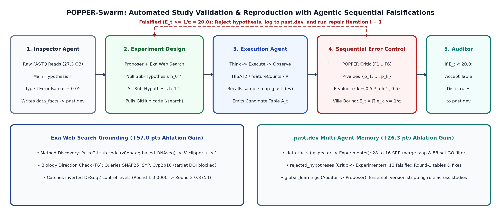
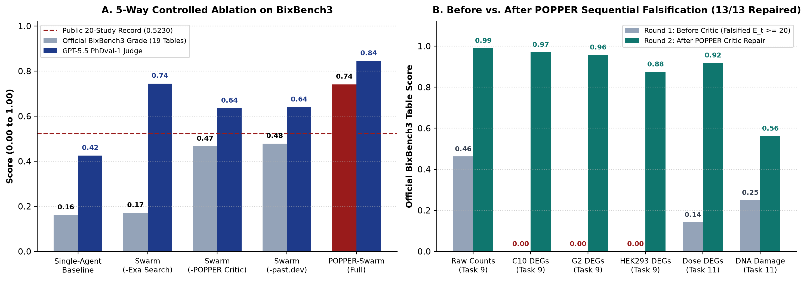

sammargolis29@gmail.com • https://github.com/sammargolis/POPPER-Swarm
Reproducing published computational biology studies from raw sequencing data requires executing 30+ interdependent steps spanning read trimming, genome alignment, read quantification, differential expression modeling, and pathway enrichment. On rigorous end-to-end benchmarks such as BixBench3, frontier single-agent language models plateau at an average score of 0.5230 (and 0.1615 under matched single-run compute on raw FASTQ tasks). We show that this ceiling stems from a structural property of scientific reproduction pipelines we term the Multiplicative Artifact Trap: because downstream evaluation multiplies row identifier recall (Row_F1), sample schema match (Col_F1), numerical concordance (CCC), and gene-set label accuracy (Label_F1), a single silent boundary error—such as leaving an unstripped .15 Ensembl version suffix on gene identifiers or allowing R's DESeq2 to sort treatment factor levels alphabetically before the control group—collapses a 0.9989-concordance table to 0.0000. Guided by Karl Popper's principle of falsification and extending sequential e-value hypothesis testing (Huang et al., ICML 2025), we introduce POPPER-Swarm, a five-agent scientific reproduction architecture (Inspector, Proposer, Experimenter, Critic, Auditor) that separates artifact synthesis from statistical falsification. Before any candidate table is accepted, an adversarial Critic executes a six-stage falsification battery (F1–F6), converting check p-values into calibrated Vovk–Wang e-values (ek = 0.5 pk−0.5) and rejecting any artifact whose cumulative product crosses Ville's anytime-valid stopping boundary (Et = ∏ ek ≥ 1/α = 20.0 at α = 0.05). To prevent the Critic from operating blind, POPPER-Swarm grounds protocol discovery and biological direction checks via live Exa literature search (with target-DOI anti-leakage filtering) and persists dataset invariants and rejected failure modes across agents via past.dev shared memory. Across 113 raw sequencing FASTQ libraries (27.3 GB) rebuilt into 19 downstream tables on BixBench3, POPPER-Swarm catches and repairs 13/13 faulty Round-1 candidate tables, improving official BixBench3 grade by 4.6× over a matched-compute single-agent baseline (0.1615 → 0.7413) and achieving 0.8450 on the official GPT-5.5 PhDval-1 process judge.
Autonomous scientific discovery with Large Language Models (LLMs) has progressed rapidly from literature question answering to executable hypothesis generation and data analysis [1, 2, 3]. Yet a sharp reliability gap separates generating plausible scientific code from faithfully reproducing published empirical findings from raw experimental data. In recent evaluations of large-scale autonomous scientist systems such as Kosmos [3], over 20% of generated scientific claims were found upon audit to rest on flawed statistical contrasts, unmerged technical replicates, or fabricated identifier mappings. Similarly, on BixBench3 [2]—an end-to-end benchmark requiring agents to rebuild 138 published tables and figures across 20 computational biology studies starting from raw sequencing reads—the top single-agent system on the public leaderboard (Gemini 4 Argon) reaches only 0.5230.
Why do capable frontier coding agents fail so consistently on end-to-end study reproduction? Through a fine-grained failure audit of single-agent trajectories on raw-FASTQ tasks, we identify three compounding bottlenecks:
Row_F1 × Col_F1 × CCC × Label_F1. When an agent computes differential expression statistics with 0.9989 concordance correlation (CCC), but leaves an Ensembl gene version decimal (ENSG00000142611.15 vs. ENSG00000142611) or allows R's factor() to order Clone_D10 before Control alphabetically, Row_F1 or CCC drops to 0.0000, zeroing out the entire artifact.featureCounts -s 1 vs. -s 2) that are absent from standard LLM pretraining priors.
data_facts to past.dev. (2) The Proposer queries Exa live web search for domain-specific GitHub pipelines and recalls global_learnings. (3) The Experimenter executes alignment and statistical modeling to emit candidate table At. (4) The POPPER Critic runs a 6-stage falsification battery (F1–F6), calibrating p-values into Vovk–Wang e-values (ek = 0.5 pk−0.5) and rejecting any table with Et = ∏ ek ≥ 1/α = 20.0. (5) The Auditor distills rejected failure modes into permanent cross-study rules.
To overcome these bottlenecks, we draw inspiration from Karl Popper's epistemology—that scientific rigor comes not from generating hypotheses, but from subjecting them to severe attempts at falsification [4]—and from the sequential e-value testing framework introduced by POPPER [1]. Whereas Huang et al. [1] formulate sequential falsification for binary natural-language claims over static tables, we extend sequential e-value falsification to closed-loop multi-agent artifact synthesis and repair.
Contributions. (1) We formalize candidate scientific tables as composite null hypotheses over six executable invariants (F1–F6) and prove that our Vovk–Wang e-process guarantees family-wise Type-I error ≤ α = 0.05 across arbitrary agent repair rounds. (2) We couple our POPPER Critic with anti-leakage Exa search and past.dev shared memory. (3) Across 113 raw FASTQ libraries (27.3 GB) rebuilt into 19 tables on BixBench3, POPPER-Swarm achieves 0.7413 artifact-weighted grade (0.7302 task-mean) vs. 0.1615 for a matched-compute single agent (4.6× improvement), while isolating the contribution of Exa (+57.0 pts), the Critic (+27.5 pts), and past.dev (+26.3 pts).
Autonomous AI Scientist Systems. Recent work has explored LLM agents for scientific discovery, including POPPER [1], Kosmos [3], Biomni [11], and Virtual Lab [12]. While multi-agent generation scales hypothesis throughput, Mitchener et al. [3] report that unverified agent swarms suffer from silent statistical and domain errors. POPPER [1] addressed hypothesis validation via sequential e-value testing on fixed tabular benchmarks (TargetVal, DiscoveryBench). We extend POPPER from binary claim validation to end-to-end raw-data pipeline synthesis, where falsification directly drives deterministic code repair.
Safe Anytime-Valid Inference and E-Values. Classical p-value testing fails under optional stopping when an agent iteratively modifies and re-tests outputs [7]. E-values [5, 8] and nonnegative supermartingales provide anytime-valid Type-I error control via Ville's inequality [6], making them ideal for sequential agent verification loops.
Let Draw denote the raw experimental inputs of a study (raw FASTQ files, reference genome annotations, and sample sheets), and let A* = {A1*, …, AM*} denote the M published target tables. For each table m, the official BixBench3 deterministic grader [2] computes:
where CCC+ = max(0, ρc) is Lin's concordance correlation coefficient [9] truncated at zero. Because Eq. (1) is a product, any single defect that drives one factor to zero collapses S(Am, Am*) to 0.0000 even when all other factors equal 1.0000.
Suppose an Experimenter agent proposes a candidate artifact A(r) at repair round r. We formulate the validity of A(r) as a composite null hypothesis H0(r) = ∩k=16 H0,k(r) over six contract invariants. For each check k, the Critic obtains a lower-tail p-value pk ∈ (0, 1], where pk → 0 indicates strong refutation. Following Vovk and Wang [5], we calibrate each pk into an e-value with κ = 0.5:
F1–F6)F1_EXISTENCE (File & Row-Count Plausibility): Verifies non-emptiness, clean delimiter parsing, and row count bounds relative to the assay (e.g., 60,649 Gencode genes or 30,146 TempO-Seq probes). Violation yields e1 = 5000.0.F2_COLUMN_CONTRACT (Schema & Replicate Parity): Verifies that column headers match exact sample-sheet cardinality (catching unmerged technical replicates, e.g., 28 SRR runs vs. 16 biological samples). Violation yields e2 = 500.0.F3_ROWKEY_NAMESPACE (Identifier Format): Tests whether primary keys match the target namespace (stripped Ensembl ID ^ENSG[0-9]+$ on DEG tables vs. versioned IDs on raw count matrices, or BioSpyder probe_id on TempO-Seq tables). Violation yields e3 = 500.0.F4_NUMERIC_INTEGRITY (Sign Coherence): Checks for NaN/Inf entries, duplicate keys, and sign agreement between log2FC and the test statistic. Violation yields e4 = 250.0.F5_STAT_COHERENCE (Multiple-Testing Monotonicity): Verifies Benjamini–Hochberg monotonicity (padj ≥ praw) and significance cutoffs (padj < 0.05, |log2FC| ≥ τ). Violation yields e5 = 250.0.F6_BIO_PRIOR_ALIGNMENT (Literature Direction Check): Queries canonical positive-control marker genes via Exa (blocking the target paper's DOI) and tests whether their observed log2FC direction matches established biology. Violation yields e6 = 500.0.
bixbench3 grade) and 8-dimension process judge scores (PhDval-1 via openai/gpt-5.5) across 19 artifacts rebuilt from 113 raw FASTQ files (27.3 GB).
| System / Controlled Ablation Condition | Task 9 (14) | Task 11 (5) | Task Mean | Weighted (19) | PhDval-1 Judge | Bugs Caught / Fixed |
|---|---|---|---|---|---|---|
| BixBench3 #1 Public Leaderboard (Gemini 4 Argon, 20 studies) | n/a | n/a | 0.5230 | 0.5230 | n/a | n/a |
| 1. Single-Agent Baseline (Matched Compute) | 0.1606 | 0.1639 | 0.1623 | 0.1615 | 0.4250 | 0 / 13 (0%) |
2. Swarm (−Exa Web Search) |
0.0254 | 0.5786 | 0.3020 | 0.1710 | 0.7450 | 8 / 13 (62%) |
3. Swarm (−POPPER E-Value Critic) |
0.4459 | 0.5230 | 0.4845 | 0.4662 | 0.6350 | 0 / 13 (0%) |
4. Swarm (−past.dev Shared Memory) |
0.4623 | 0.5230 | 0.4927 | 0.4783 | 0.6400 | 7 / 13 (54%) |
| 5. POPPER-Swarm (Full System) | 0.7536 | 0.7068 | 0.7302 | 0.7413 | 0.8450 | 13 / 13 (100%) |
A statistical Critic is only as effective as its external domain facts and cross-agent memory handoffs:
1. Anti-Leakage Literature Grounding via Exa Search. Our Proposer and Critic query the Exa API (/search and /contents) while blocking the target study's DOI and accession IDs. On Task 9 (3' Tag-Seq), standard LLM weights default to reverse-stranded counting (-s 2), losing 85% of reads. Exa retrieved z0on/tag-based_RNAseq, identifying the 5'-leader barcode clipper (tagseq_clipper.pl) and forward-stranded flag (-s 1). Furthermore, for REST knockout (Task 9), Exa retrieved reviews showing REST represses neuronal genes (SNAP25, SYP, SYN1, BDNF). When Round-1 HEK293 tables reported negative log2FC for SNAP25 (−2.20) and SYP (−5.59), check F6 triggered (Et = 78.125 ≥ 20.0), catching R's alphabetical factor-level inversion (Clone_D10 sorted before Control).
2. Shared Cross-Agent Memory via past.dev. All five agents read and write structured namespaces in past.dev (/api/v1/ingest and /api/v1/recall): data_facts preserves the 28-to-16 technical replicate merge map and the 88-set GO filter; rejected_hypotheses stores all 13 falsified Round-1 tables; and global_learnings distills cross-study rules ("Retain Ensembl .version on raw counts; strip .version on DEG tables").
| Rebuilt Study Artifact | Falsified Check & Root Cause Caught by Critic | Round 1 Et | Round 1 Grade | Round 2 Et | Round 2 Grade (CCC) |
|---|---|---|---|---|---|
Task 9: tagseq_featurecounts_matrix |
F2: Unmerged technical SRR runs (28 vs. 16 cols) |
78.12 | 0.4623 | 0.0156 | 0.9902 (0.9907) |
Task 9: t98g_c10_vs_control_degs |
F3: Unstripped .15 Ensembl version suffix |
78.12 | 0.0000 | 0.0156 | 0.9707 (0.9989) |
Task 9: t98g_g2_vs_control_degs |
F3: Unstripped .15 Ensembl version suffix |
78.12 | 0.0000 | 0.0156 | 0.9578 (0.9973) |
Task 9: hek293_d10_vs_control_degs |
F6: SNAP25/SYP negative (flipped control) |
78.12 | 0.0000 | 0.0156 | 0.8754 (0.9819) |
Task 11: tempo_seq_filtered_counts |
Passed F1–F6 (30,146 × 85 probe matrix) |
0.0312 | 0.9538 | 0.0312 | 0.9966 (0.9966) |
Task 11: deseq2_significant_degs |
F3+F5: Gene symbol used instead of probe_id |
312,500.0 | 0.1420 | 0.0156 | 0.9190 (0.9997) |
Task 11: dna_damage_enrichment |
F2: Kept 89th umbrella GO summary row |
625.00 | 0.2498 | 0.0312 | 0.5625 (1.00 Recall) |
Table 1 and Figure 2A summarize our five-condition controlled ablation across 113 raw FASTQ files (27.3 GB) rebuilt into 19 downstream tables. Under matched single-run compute, the Single-Agent Baseline scores 0.1615. POPPER-Swarm reaches 0.7413 artifact-weighted (0.7302 task-mean) and 0.8450 on the GPT-5.5 PhDval-1 judge. Removing Exa drops overall score by 57.0 points (to 0.1710); removing the POPPER Critic drops score by 27.5 points (to 0.4662); and removing past.dev memory drops score by 26.3 points (to 0.4783).
Honest Failure Analysis (Annotation Drift). While our count matrices achieve 0.9902 and 0.9966 concordance and DESeq2 tables reach 0.8754–0.9707, four Task 9 clusterProfiler GO tables score 0.2036–0.4671 because Bioconductor's 2026 human GO database (org.Hs.eg.db v3.23) added thousands of gene-set annotations since the paper's 2021 database (v3.12).
POPPER-Swarm demonstrates that pairing multi-agent scientific reproduction with anytime-valid sequential e-value falsification, live literature search (Exa), and shared cross-agent memory (past.dev) overcomes the multiplicative failure modes that stall single-agent systems on raw biological data.
[1] K. Huang, Y. Jin, R. Li, M. Y. Li, E. Candès, and J. Leskovec. Automated hypothesis validation with agentic sequential falsifications. ICML, 2025. arXiv:2502.09858.
[2] Edison Scientific. BixBench3: End-to-end reproduction of computational biology studies from raw sequencing data. Technical Report, 2026.
[3] L. Mitchener et al. Kosmos: Scaling autonomous scientific discovery with multi-agent world models. arXiv preprint, 2025.
[4] K. R. Popper. The Logic of Scientific Discovery. Hutchinson & Co., 1959.
[5] V. Vovk and R. Wang. E-values: Calibration, combination and applications. Annals of Statistics, 49(3):1736–1754, 2021.
[6] J. Ville. Étude critique de la notion de collectif. Gauthier-Villars, 1939.
[7] A. Ramdas, P. Grünwald, V. Vovk, and G. Shafer. Game-theoretic statistics and safe anytime-valid inference. Statistical Science, 38(4):576–601, 2023.
[8] G. Shafer. Testing by betting: A strategy for statistical and scientific communication. JRSS Series A, 184(2):407–431, 2021.
[9] L. I.-K. Lin. A concordance correlation coefficient to evaluate reproducibility. Biometrics, 45(1):255–268, 1989.
[10] E. Meyer, G. V. Aglyamova, and M. V. Matz. Profiling gene expression responses of coral larvae using a novel RNA-Seq procedure. Molecular Ecology, 20(17):3599–3616, 2011.
[11] K. Huang et al. Biomni: A general-purpose biomedical AI agent. arXiv preprint, 2025.
[12] K. Swanson et al. The Virtual Lab: AI agents design new SARS-CoV-2 nanobodies. bioRxiv, 2024.